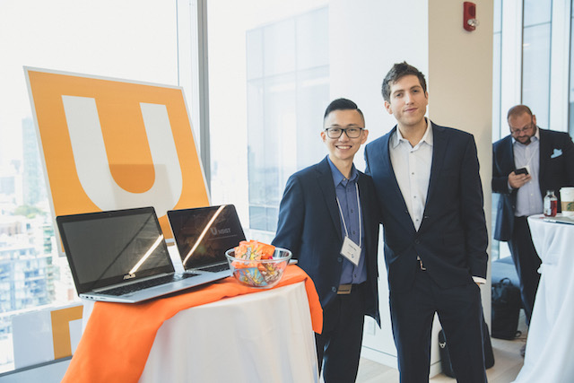

Posted on Feb 2, 2018 at 09:43 AM
Dudon Wai is one of the founders of Unsist, a data-science startup for the Oil & Gas industry. In 2014, Dudon graduated from engineering at the University of Waterloo. Dudon had the opportunity to work at Shell as a drilling engineer on co-op as well as after graduation. 2014 was also the year that oil price began to fall amid high and unsustainable operating costs. After working in the industry for several years, Dudon saw an incredible need in the industry for data-driven decision-making. He and his co-founder started Unsist, a market intelligence platform that provides a comprehensive database and proprietary analytics to improve decision-making in Oil & Gas. Let’s Begin!
The term “unsist” means to not stand still or to never stop. We named our company “Unsist” because we are a technology company that never stops improving. Unsist helps Oil & Gas companies make better faster decisions by utilizing data science and machine-learning technology to improve productivity and efficiency.
I believe that now is the time for Unsist because the energy industry is shifting more and more towards efficiency and sustainability. The advancements in computation, data, cloud and connected things have led to vast progress in the software industry, while many of the benefits are yet to be realized in other sectors like finance, healthcare and especially energy. The reality for energy is “lower for longer”, and for the industry to thrive, we need to take advantage of the historical data generated over the last few decades to improve our decision-making today and tomorrow.
The biggest threat to Unsist is people. People are what makes companies and entire industries run. With the Oil & Gas downturn, very smart and motivated people have gone to seek other opportunities and has major implications on the talent landscape over the next several years. When the industry picks up again – and it will – there is going to be a fight for a small pool of talent. On top of that, building a company with strong skill sets in energy and software are crucial to our success, and more difficult to find. Attracting and building talent over time will be one of our keys to success.
There’s an ongoing conversation about how renewables will affect our industry and company. I view the Oil & Gas industry as a subset of the energy industry, and as a technology company, we’re positioned to optimize operations regardless of the energy source. Again, putting people first will be key for building a sustainable company that can withstand change and uncertainty.
In today’s day and age, there is a lot of data made accessible to everybody. The important question raised is, how can we use this data? The answer is to translate all this raw, complex and scattered data into insightful, understandable data that can be used for better, faster decisions.
AI is software making decisions, whether it’s making a move in chess or detecting a person in a photograph. AI helps humanity scale our decision-making so we can focus on newer and bigger problems to solve. When we think of AI in the context of machine learning, it’s software teaching itself to learn and improve. Rule-based programming is still very effective, but machine learning is a game changer as we continue to collect more data to teach our software. However, the human aspect will be essential for a long, long time. Humans (data scientists) are actively involved in the teaching process, and until Artificial General Intelligence matures, software will only be good at specific tasks and humans will very much be needed to develop software to solve new problems. There’s also a whole other conversation about explainability, ethics and privacy!
For aspiring entrepreneurs, there is nothing wrong with experimenting with the industry. If you think that this is what you want to do, go for it. Only through experimentation and experience will you learn about yourself, your goals, values, strengths and weaknesses. For current founders, I want to put it out as a reminder to stay true to your company’s values and continue bringing in innovation and creative ideas to the industry.
Unsist currently part of the Creative Destruction Lab in Calgary. The Creative Destructive Lab is a seed-stage program for science-based companies that are extremely scalable. We hope to first, raise our pre-seed financing round during this program, and second, scale forward and grow by leveraging the resources made available to us. We are very optimistic, and hope to see the end of the milestone-based program in June this year.
A big thanks to Dudon Wai for allowing us to conduct this interview. We look forward to see how you and your business will grow and flourish in the Oil & Gas industry. Don’t give up on innovating the energy sector and with that, we wish you the best of luck to your future.